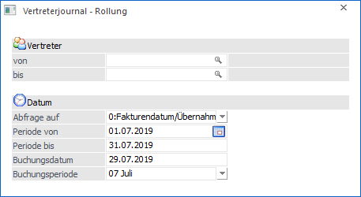

In dem Menüpunkt…
1 WinLine FAKT
1 Auswertungen
1 Vertreterauswertungen
1 Vertreterjournal Rollung
… können bereits erfasste und ausgezahlte Vertreterjournalzeilen neu berechnet werden. Die WinLine vergleicht hierbei die bereits erfassten Werte mit jenen, welche neu errechnet wurden (abweichende Werte entstehen durch rückwirkend gültig gewordene Prozentsätze). Dabei wird eine so genannte "Vertreterjournal Rollung - Differenzliste" erstellt und gedruckt.
Hinweis
Bei dieser Rollung wird ausschließlich die "Automatik" verwendet. D.h. manuelle Eingaben/Änderungen (z.B. im Register "Vertreter" im Belegerfassen oder im Menüpunkt "Vertreterjournal editieren) gehen dabei verloren!
Weiteres ist zu beachten, dass Belegzeilen vorhanden sein müssen damit die Rollung auch entsprechend darauf zugreifen kann. In Bezug auf Belegstornos bedeutet dies auch, dass mit der Einstellung in den FAKT-Parametern "Kopie des stornierten Beleges erstellen" gearbeitet werden muss!

Ø Vertreter von / bis
An dieser Stelle erfolgt die Einschränkung auf die Vertreter bzw. Vertretergruppen, für welche die Neuberechnung durchgeführt werden soll.
Ø Abfrage auf
Mit Hilfe einer Auswahlliste kann definiert werden, auf welche Datenbereich sich die nachfolgende Selektion (Felder "Periode von / bis") beziehen soll. Folgende Varianten stehen hierbei zur Auswahl:
ü 0 - Fakturendatum/Übernahmedatum
ü 1 - Lieferdatum
Beispiel 1
ü Abfrage auf "0-Fakturendatum/Übernahmedatum"
ü Periode von "01.04.2019" und bis Periode "31.12.2019"
Alle Zeilen deren Fakturendatum bzw. Übernahmedatum in den Datumsbereich 01.04.2019 bis 31.12.2019 fallen, werden neu berechnet.
Beispiel 2
ü Abfrage auf "1-Lieferdatum"
ü Periode von "01.04.2019" und bis Periode "31.12.2019"
Alle Zeilen deren Lieferdatum in den Datumsbereich 01.04.2019 bis 31.12.2019 fallen, werden neu berechnet.
Ø Periode von / bis
An dieser Stelle kann eine Einschränkung auf einen Datumsbereich erfolgen. Dieses wieder abhängig von der Auswahl der Einstellung "Abfrage auf".
Ø Buchungsdatum
In diesem Feld wird festgelegt, mit welchem Buchungsdatum die neuen Zeilen gebucht werden sollen.
Ø Buchungsperiode
Aus der Auswahlliste kann gewählt werden, in welche Periode die Buchungen gestellt werden sollen.
Buttons

Ø Ok
Durch Anwählen des Buttons "Ok" bzw. der Taste F5 wird die Vertreterjournal Rollung gestartet. Hierbei werden auf Basis der betroffenen Belegmittelteilzeilen die Vertreterjournalzeilen neu generiert und eine automatische Provisionsübernahme durchgeführt. Die neu erstellten Übernahmejournalzeilen werden mit den "alten" Übernahmejournalzeilen verglichen und pro Vertreter eine eventuelle Differenz ermittelt. Dazu wird ein entsprechendes Protokoll ausgegeben. Weiteres wird ein Buchungsstapel erstellt in dem die, lt. Einschränkung, bereits zuvor vorhandenen Zeilen storniert, also mit negativem Vorzeichen eingefügt, werden; ebenso werden die "neuen" Zeilen eingefügt.
Ø Ende
Durch Drücken des Buttons "Ende" bzw. der Taste ESC wird das Fenster geschlossen.